Archiving Craft Gestures
Exploring how craft gestures can be digitized and transformed into interactive instructions.
- 🎯 Interactive gesture tracking with Procession
- 🏆 Real-time projection and feedback systems
- 🌐 Non-linear instruction methods
- 🔍 Focus on user-driven exploration
- 🤝 Bridging physical craft and digital interaction
- 🍐 by Pear Jansomwong
Try it yourself:
- • Become Part of the Archive
- --> Position your hands in front of your webcam
- --> Follow along with the movements shown
- --> Observe how your gestures are tracked and translated
Welcome to the Archive
• How can these gestures be preserved while allowing exploration and adaptation?
• These gestures are more than physical movements—they carry cultural memories that are meaningful than the outcome.
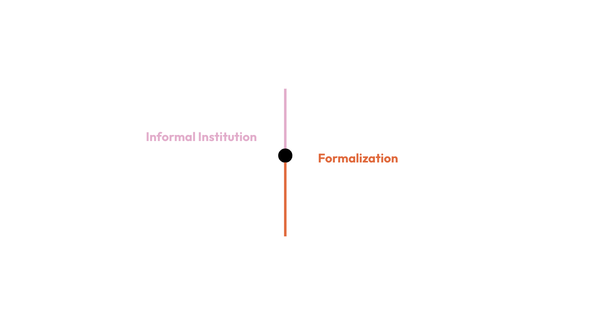 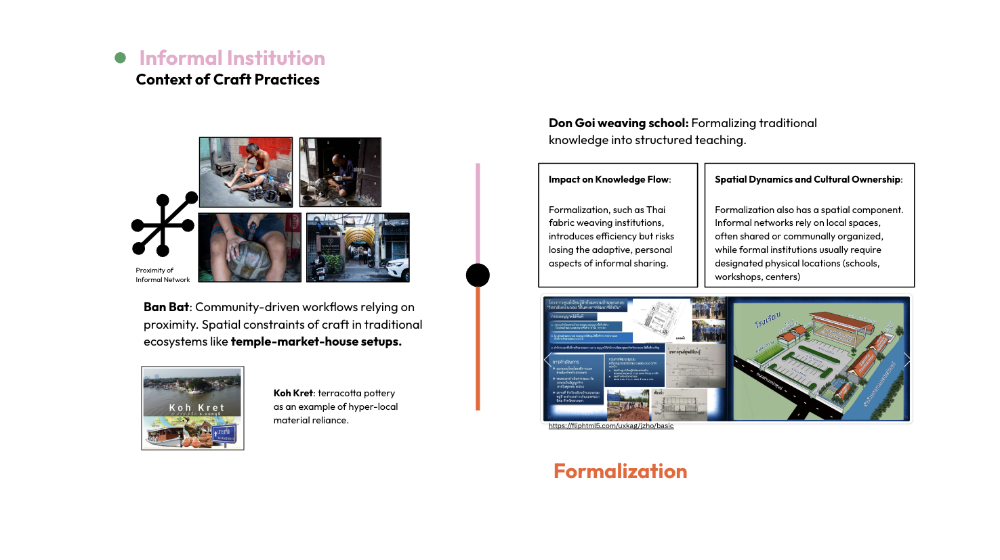 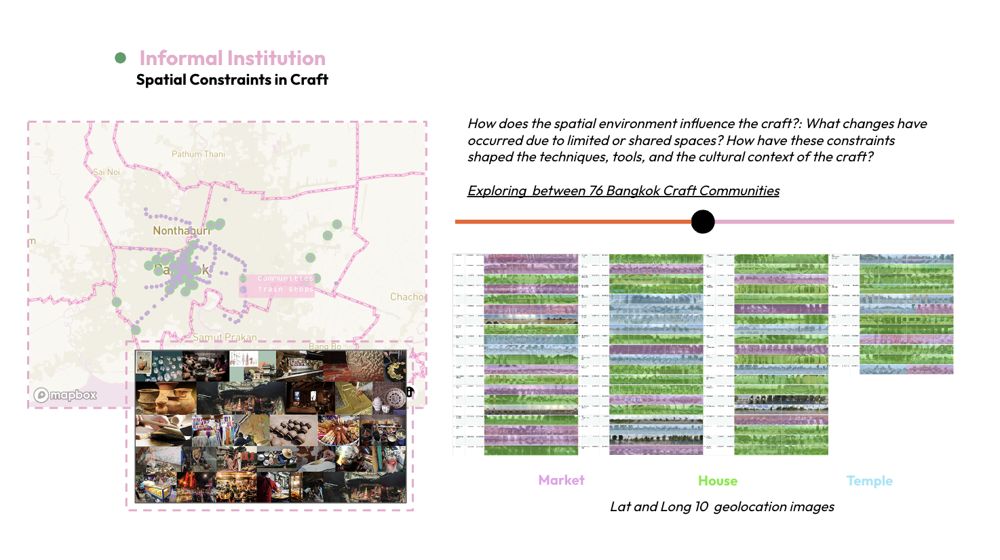 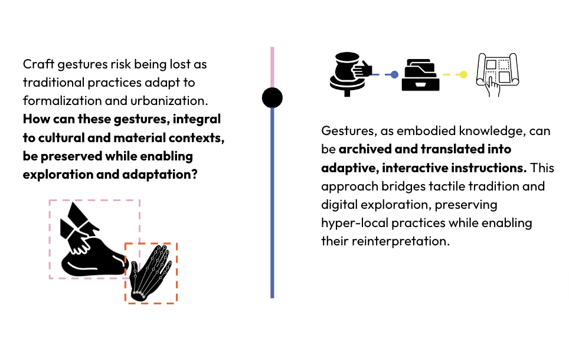This project integrates craft gestures into interactive computational frameworks, positioning instructions as an intrinsic part of the archival process. By capturing and translating gestures into adaptive, non-linear instructions, it explores how embodied knowledge can be preserved and recontextualized across diverse materials and cultural contexts. Using computational tools such as hand tracking and real-time feedback systems, the project dynamically responds to user input, allowing for exploratory interactions that evolve with each engagement. The resulting system demonstrates how integrating archiving and instructional design can preserve craft practices while fostering new forms of cultural expression and material experimentation.
Proof of Concept | Prototype
Prototyping Gesture Archives: A Dual-Scale Approach
• Archiving Component
Natural Interaction
Digital manipulation
To explore this concept, I started by making a Digital Manipulation Prototype. Using Procession, I tracked hand and finger gestures to manipulate 2D digital models. This initial prototype replicates craft gestures like spinning, pinching, and molding in a digital environment.
01 Spin Prototype
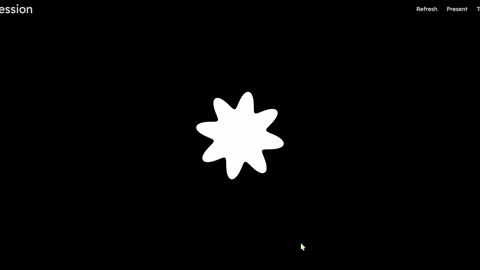02 Pinch Prototype
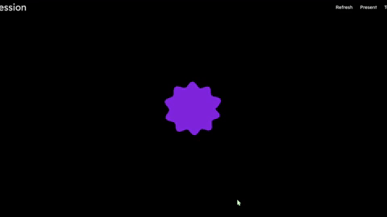03 Mold Prototype
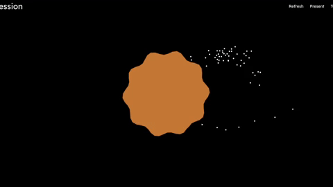Prototype | Instruction Component
• Instructions are not secondary but an intrinsic part of the archiving process.
• By translating gestures into interactive steps, the project ensures both preservation and adaptability.
• Map gestures onto the surface (e.g., clay) as interactive instructions, with feedback responding to material behavior.
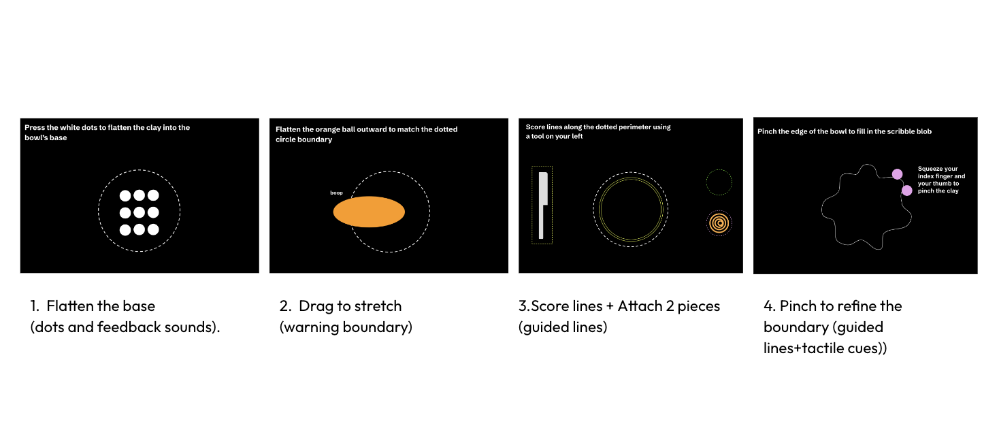Precedents
Archiving Approach
HKMALA
Martial Arts as Living Archives: Demonstrating embodied instructions.
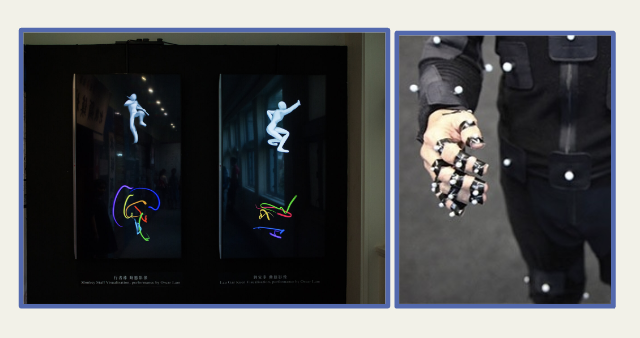This project captures Hong Kong martial arts movements and transforms them into digital archives, preserving endangered cultural practices. It employs machine learning to analyze recurring patterns, allowing unsupervised insights into gestures and movements. HKMALA
Cyber Subin
Digital preservation of traditional practices through interactive archives.
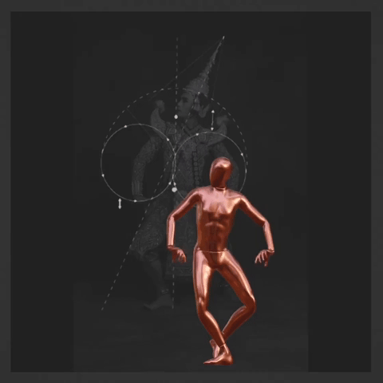This project explores "Human-AI co-dancing," blending traditional Thai dance knowledge with virtual choreographic agents. Through computational modeling, it enables real-time interaction between human dancers and virtual partners, showcasing a hybrid approach to cultural preservation and creative expression. Cyber Subin
Instruction Approach
Fingerspelling.xyz
Translating movements into step-by-step interactive guides.
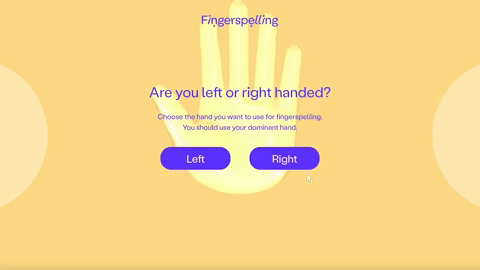An open-source tool teaching American Sign Language (ASL) through gesture recognition. It uses TensorFlow.js and MediaPipe for tracking, with interactive tutorials and adaptive learning. Fingerspelling.xyz highlights how real-time gesture tracking can be both instructional and exploratory. Fingerspelling.xyz
Colorful Night
Interactive learning through gesture-based instructions.
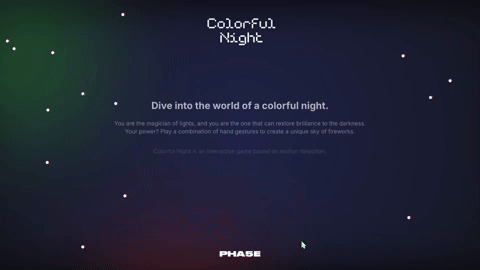This project combines hand gesture control with interactive digital manipulation using WebGL and MediaPipe. It creates immersive visual experiences, demonstrating seamless interaction between human gestures and digital feedback. Colorful Night showcases the potential of gesture-based interactions to bridge physical and digital experiences. Colorful Night
Computational & Design Method
I worked with hand-tracking data, grid-based mapping, and annotated finger movements. Tools include OpenCV, Procession, and simple gesture detection frameworks for interactive projections.
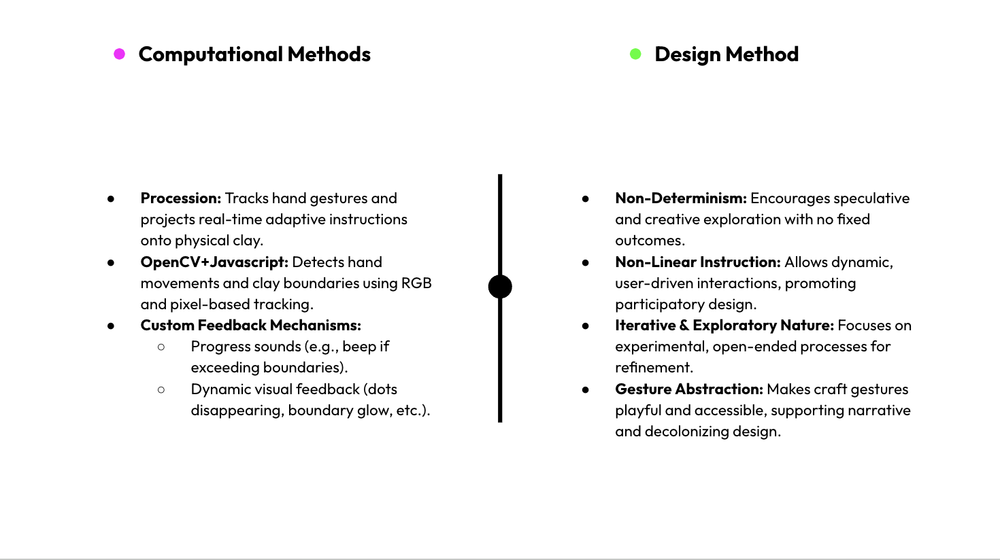Research & Bibliography
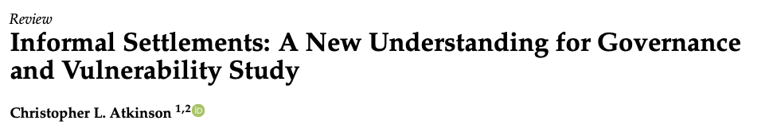 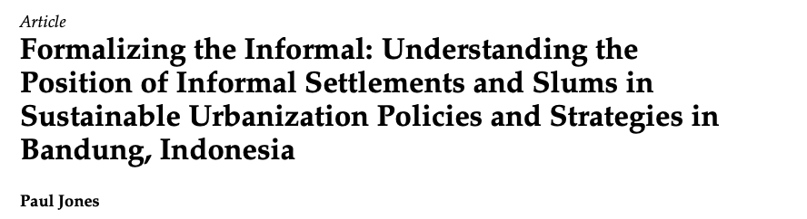 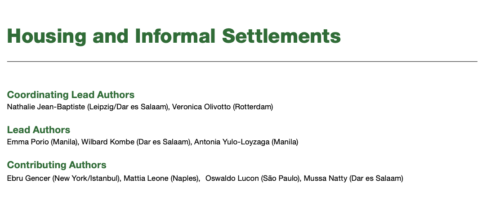 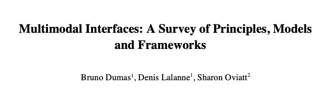For more information
View my presentation here